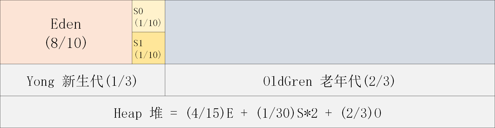
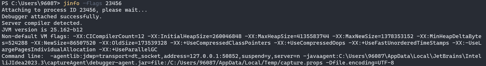
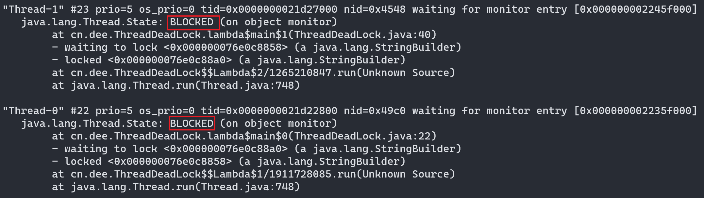
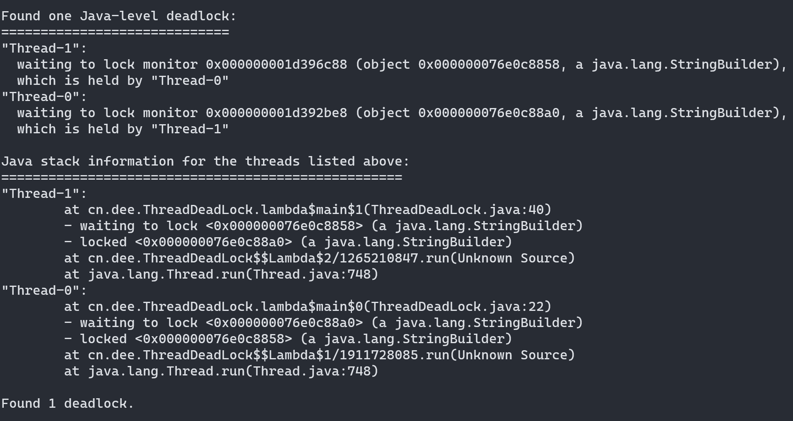
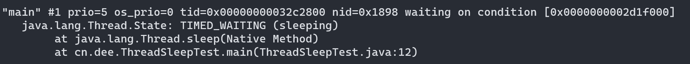
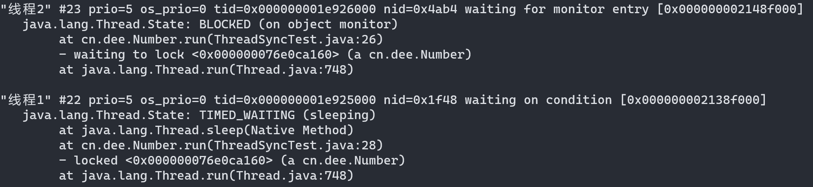

JVM监控及诊断-命令篇
概述
性能调优思路
1-发现问题: 性能监控
- GC 频繁
- cpu load 过高
- OOM
- 内存泄漏
- 死锁
- 程序响应时间长
2-排查问题: 性能分析
- 打印 GC 日志, 通过 GCviewer 或者 http://gceasy.io 来分析日志信息
- 灵活运用命令行工具: jstack, jmap, jinfo 等
- dump出堆文件, 使用内存分析工具分析文件
- 使用阿里 Arthas, 或 jconsole, JVisualVM 来实时查看 JVM 状态
- jstack 查看堆栈信息
3-解决问题: 性能调优
- 适当增加内存, 根据业务背景选择垃圾回收器
- 优化代码, 控制内存使用
- 增加机器, 分散节点压力
- 合理设置线程池线程数量
- 使用中间件提高程序效率, 比如缓存, 消息队列等
性能评价/测试指标
1-停顿时间(或响应时间)
提交请求和返回该请求的响应之间使用的时间, 一般比较关注平均响应时间
常用操作的响应时间列表
| 操作 | 响应时间 |
|---|---|
| 打开一个站点 | 几秒 |
| 数据库查询一条记录(有索引) | 十几毫秒 |
| 机械硬盘一次寻址定位 | 4毫秒 |
| 从机械磁盘顺序读取 1M 数据 | 2毫秒 |
| 从 SSD 磁盘顺序读取 1M 数据 | 0.3毫秒 |
| 从远程分布式换成 Redis 读取一个数据 | 0.5毫秒 |
| 从内存读取 1M 数据 | 十几微妙 |
| 网络传输 2KB 数据 | 1 微妙 |
在垃圾回收环节中:
暂停时间: 执行垃圾收集时, 程序的工作线程被暂停的时间
-XX:MaxGCPauseMillis
2-吞吐量
对单位时间内完成的工作量(请求量)的量度
在 GC 中: 运行用户代码的时间占总运行时间的比例(总运行时间: 程序的运行时间 + 内存回收的时间)
吞吐量为 1-1/(1 + n) -XX:GCTimeRatio=n
3-并发数
同一时刻, 对服务器由实际交互的请求数
1000个人同时在线, 估计并发数在 5%-15% 之间, 也就是同时并发量: 50-150 之间
4-内存占用
Java 堆区所占用的内存大小
02-jps
查看正在运行的Java进程
03-jstat
jstat(JVM Statistics Monitoring Tool):
用于监视虚拟机各种运行状态信息的命令行工具。它可以显示本地或者远程虚拟机进程中的类装载、内存、垃圾收集、JIT 编译等运行数据。
在没有GUT图形界面，只提供了纯文本控制台环境的服务器上，它将是运行期定位虚拟机性能问题的首选工具。常用于检测垃圾回收问题以及内存泄漏问题。
官方文档：
https://docs.oracle.com/javase/8/docs/technotes/tools/unix/istat.html
基本语法
它的基本使用语法为：
jstat -<option> [-t] [-h<linues>] <vmid> [<interval> [<count>]]
类装载相关:
-class: 显示 ClassLoader 的相关信息: 类的装载、卸载数量、总空间、类装载所消耗的时间等option参数
- 类装载相关:
| 选项 | 选项说明 |
|---|---|
- class |
显示 ClassLoader 的相关信息: 类的装载、卸载数量、总空间、类装载所消耗的时间等 |
- 垃圾回收相关的：
| 选项 | 选项说明 |
|---|---|
| 👍-gc | 显示与 GC 相关的堆信息。包括 Eden 区、两个 Survivor 区、老年代、永久代等的容量、已用空间、GC 时间合计等信息。 |
| -gccapacity | 显示内容与 -gc 基本相同，但输出主要关注 Java 堆各个区域使用到的最大、最小空间。 |
| 👍-gcutil | 显示内容与 -gc 基本相同，但输出主要关注己使用空间占总空间的百分比。 |
| 👍-gccause | 与 -gcutil 功能一样，但是会额外输出导致最后一次或当前正在发生的GC产生的原因。 |
| -gcnew | 显示新生代GC状况 |
| -gcnewcapacity | 显示内容与 -gcnew 基本相同，输出主要关注使用到的最大、最小空间 |
| -geold | 显示老年代 GC 状况 |
| -gcoldcapacity | 显示内容与 -gcold基本相同，输出主要关注使用到的最大、最小空间 |
| -gcpermcapacity | 显示永久代使用到的最大、最小空间。 |
- JIT 相关的：
| 选项 | 选项说明 |
|---|---|
-compiler |
显示 JIT 编译器编译过的方法、耗时等信息 |
-printcompilation |
输出己经被 JIT 编译的方法 |
👍interval参数
- 用于指定输出统计数据的周期, 单位为毫秒. 即: 查询时间
👍count参数
- 用于指定查询的总次数
👍**-t参数**
- 可以在输出信息前加上一个Timestamp列，显示程序的运行时间。单位：秒
- 可以比较 Java 进程的启动时间以及总 GC 时间 (GCT 列), 或者两次测量的间隔时间以及总 GC 时间的增量, 来得出 GC 时间占运行时间的比例
- 如果该比例超过 20%, 则说明目前堆的压力较大; 如果该比例超过 90%, 则说明堆里几乎没有可用空间, 随时都可能抛出 OOM 异常
-h参数
- 可以在周期性输出时, 输出多少行数据后输出一个表头信息
-gc 控制台详解
堆空间默认比例

新生代相关
- S0C 是第一个幸存者区的大小（字节）
- S1C 是第二个幸存者区的大小（字节）
- S0U 是第一个幸存者区已使用的大小（字节）
- S1U 是第二个幸存者区已使用的大小（字节）
- EC 是 Eden 空间的大小（字节）
- EU 是 Eden 空间已使用大小（字节）
老年代相关
- OC 是老年代的大小（字节）
- OU 是老年代已使用的大小（字节）
方法区（元空间）相关
- MC 是方法区的大小
- MU 是方法区已使用的大小
- CCSC 是压缩类空间的大小
- CCSU 是压缩类空间已使用的大小
其他
- YGC 是从应用程序启动到采样时 young gc 的次数
- YGCT 是指从应用程序启动到采样时 young gc 消耗时间（秒）
- FGC 是从应用程序启动到采样时 full gc 的次数
- FGCT 是从应用程序启动到采样时的 full gc 的消耗时间（秒）
- GCT 是从应用程序启动到采样时 gc 的总时间
代码示例
// -Xms60m -Xmx60m -XX:SurvivorRatio=8
public class GCTest {
public static void main(String[] args) {
ArrayList<byte[]> list = new ArrayList<>();
for (int i = 0; i < 1000; i++) {
byte[] arr = new byte[1024 * 100]; //100kb
list.add(arr);
try {
Thread.sleep(120);
} catch (InterruptedException e) {
throw new RuntimeException(e);
}
}
}
}
// 终端命令
// jstat -gc -t 1476 1000 10
// jstat -gcutil -t 1476 1000 10
// jstat -gccause -t 10200 1000 10-t 参数观察说明
GCT的时间差/Timestamp时间差: 如果大于20%,说明堆压力较大; 如果大于90%, 则随时都可能GC, 详细见 -t参数 描述
判断是否出现内存泄漏
- 在长时间运行的 Java 程序中，我们可以运行
jstat命令连续获取多行性能数据，并取这几行数据中 OU 列（即己占用的老年代内存）的最小值。 - 然后，我们每隔一段较长的时间重复一次上述操作，来获得多组 OU 最小值。如果这些值呈上涨趋势，则说明该 Java 程序的老年代内存己使用量在不断上涨，这意味着无法回收的对象在不断增加，因此很有可能存在内存泄漏。
04-jinfo
查看虚拟机配置参数信息, 也可用于调整虚拟机的配置参数
在很多情况下，Java 应用程序不会指定所有的 Java 虚拟机参数。而此时，开发人员可能不知道某一个具体的 Java 虚拟机参数的默认值。在这种情况下，可能需要通过查找文档获取某个参数的默认值。这个查找过程可能是非常艰难的。但有了 jinfo 工具，开发人员可以很方便地找到 Java 虚拟机参数的当前值。
基本语法
jinfo [options] pid
说明: java 进程 ID 必须要加上
| 选项 | 选项说明 |
|---|---|
| -flag name | 输出对应名称的参数 |
| -flag [±] name | 开启或者关闭对应名称的参数, 只有被标记为 manageable 的参数才可以被动态修改 |
| -flag name=value | 设定对应名称的参数 |
| -flags | 输出全部的参数 |
| -sysprops | 输出系统属性 |
控制台详解
代码示例
public class ScannerTest {
public static void main(String[] args) {
Scanner scanner = new Scanner(System.in);
String info = scanner.next();
}
}查看参数
jinfo -flags 23456

jinfo -flag UseParallelGC 23456
修改参数
jinfo 不仅可以查看运行时某一个 Java 虚拟机参数的实际取值, 甚至可以在运行时修改部分参数, 并使之立即生效.
但是, 并非所有参数都支持动态修改. 参数只有被标记 manageable 的 flag 可以被实时修改. 其实, 这个修改能力是及其有限的.
- 查看被标记 manageable 的参数
java -XX:+PrintFlagsFinal -version | grep manageable
针对boolean类型
jinfo -flag [+/-]参数名称 进程id
针对非boolean类型
jinfo -flag 参数名称=参数值 进程id
拓展
查看所有 JVM 参数启动的初始值
java -XX:+PrintFlagsInitial
查看所有 JVM 参数的最终值
java -XX:+PrintFlagsFinal
查看那些已经被用户或者 JVM 设置过的详情的XX参数的名称和值
java -参数名称:+PrintCommandLineFlags
05-jmap
导出内存映像文件&内存使用情况
jmap(JVM Memory Map): 作用一方面是获取 dump 文件（堆转储快照文件，二进制文件）, 它还可以获取目标 Java 进程的内存相关信息，包括 Java 堆各区域的使用情况、堆中对象的统计信息、类加载信息等。
开发人员可以在控制台中输入命令 jmap-help 查阅 jmap 工具的具体使用方式和一些标准选项配置。
官方帮助文档：
https://docs.oracle.com/en/java/javase/11/tools/jmap.html
基本语法
jmap [option] <pid>jmap [option] <executable>jmap [option] [server_id@]<remote server IP or hostname>
option 包括
| 选项 | 选项说明 |
|---|---|
| -dump | 生成dump文件 |
| -finalizerinfo | 以 ClassLoader 为统计口径输出永久代的内存状态信息 |
| -heap | 输出整个堆空间的详细信息, 包括 GC 的使用、堆配置信息, 以及内存的实用信息等 |
| -histo | 输出堆空间中对象的统计信息, 包括类、实例数量和合计容量 |
| -permstat | 以 ClassLoader 为统计口径输出永久代的内存状态信息 |
| -F | 当虚拟机进程对 -dump 选项没有任何响应时, 强制执行生成 dump 文件 |
👍**-dump**
- 生成Java堆转储快照：dump文件
- 特别的：-dump:live只保存堆中的存活对象
👍**-heap**
- 输出整个堆空间的详细信息, 包括 GC 的使用、堆配置信息, 以及内存的使用信息等
👍**-histo**
- 输出堆中对象的统计信息, 包括类、实例数量和合计容量
- 特别的: -histo:live 只统计堆中的存活对象
-permstat
- 以 ClassLoader 为统计口径输出永久代的内存状态信息
- 仅 linux/solaris 平台有效
-finalizerinfo
- 显示在 F-Queue 中等待 Finalizer 线程执行 finalize 方法的对象
- 仅 linux/solaris 平台有效
-F
- 当虚拟机进程对 -dump 选项没有任何响应时, 可使用此选项强制执行生成 dump 文件
- 仅 linux/solaris 平台有效
-J <flag>
- 传递参数给 jmap 启动的 JVM
使用1: 导出内存映像文件
一般来说，使用 jmap 指令生成 dump 文件的操作算得上是最常用的 jmap 命令之一，将堆中所有存活对象导出至一个文件之中。
Heap Dump 又叫做堆存储文件，指一个 Java 进程在某个时间点的内存快照。Heap Dump 在触发内存快照的时候会保存此刻的信息如下：
- A110 bjects
Class,fields,primitive values and references - A11C1 asses
ClassLoader,name,super class,static fields - Garbage Collection Roots
objects defined to be reachable by the JVM - Thread Stacks and Local Variables
The call-stacks of threads at the moment of the snapshot,and per-frame
information about local objects
说明：
- 通常在 Heap Dump 文件前会触发一次 Full GC,所以neap dump文件里保存的都是 Full GC 后留下的对象信息。
- 由于生成 dump 文件比较耗时，因此大家需要耐心等待，尤其是大内存镜像生成 dump 文件则需要耗费更长的时间来完成。
手动的方式
jmap -dump:format=b,file=<filename.hprof> <pid>- 👍
jmap -dump:live,format=b,file=<filename.hprof> <pid>
自动的方式
-XX:+HeapDumpOnOutOfMemoryError-XX:HeapDumpPath=<filename.hprof>
当程序发生 OOM 退出系统时，一些瞬时信息都随着程序的终止而消失，而重现 OOM 问题往往比较困难或者耗时。此时若能在 OOM 时，自动导出 dump 文件就显得非常迫切。
这里介绍一种比较常用的取得堆快照文件的方法，即使用：
-XX:+HeapDumpOnOutofMemoryError：在程序发生OOM时，导出应用程序的当前堆快照。
-XX:HeapDumpPath：可以指定堆快照的保存位置。
比如：
-Xmx100m -XX:+HeapDumpOnOutofMemoryError -XX:HeapDumpPath=D:\m.hprof
使用2: 显示堆内存相关信息
jmap -heap pid展示当前堆空间信息jmap -histo pid展示当前对象信息
小结
由于 jmap 将访问堆中的所有对象，为了保证在此过程中不被应用线程干扰，jmap 需要借助安全点机制，让所有线程停留在不改变堆中数据的状态。也就是说，由 jmap 导出的堆快照必定是安全点位置的。这可能导致基于该堆快照的分析结果存在偏差。
举个例子，假设在编译生成的机器码中，某些对象的生命周期在两个安全点之间，那么 :live 选项将无法探知到这些对象。
另外，如果某个线程长时间无法跑到安全点，jmap 将一直等下去。
与前面讲的 jstat 则不同，垃圾回收器会主动将 jstat 所需要的摘要数据保存至固定位置之中而 jstat 只需直接读取即可。
06-jhat
(JVM Heap Analysis Tool): JDK 自带堆分析工具
Sun JDK 提供的 jhat 命令与 jmap 命令搭配使用，用于分析 jmap 生成的 heap dump 文件（堆转储快照)。jhat 内置了一个微型的 HTTP/HTML 服务器，生成 dump 文件的分析结果后，用户可以在浏览器中查看分析结果（分析虚拟机转储快照信息）。
使用了 jhat 命令，就启动了一个 http 服务，端口是7000，即 http://1oca1host:7000/ , 就可以在浏览器里分析。
说明：jhat命令在JDK9、JDK10中已经被删除，官方建议用VisualVM代替。
07-jstack
打印 JVM 中线程快照
jstack(JVM Stack Trace): 用于生成虚拟机指定进程当前时刻的线程快照（虚拟机堆栈跟踪)。线程快照就是当前虚拟机内指定进程的每一条线程正在执行的方法堆栈的集合。
生成线程快照的作用：可用于定位线程出现长时间停顿的原因，如线程间死锁、死循环、请求外部资源导致的长时间等待等问题。这些都是导致线程长时间停顿的常见原因。当线程出现停顿时，就可以用jstack显示各个线程调用的堆栈情况。
官方帮助文档：
https://docs.oracle.com/en/java/javase/11/tools/jstack.html
在thread dump中，要留意下面几种状态
- 死锁，Deadlock(重点关注)
- 等待资源，Waiting on condition(重点关注)
- 等待获取监视器，Waiting on monitor entry(重点关注)
- 阻塞，Blocked(重点关注)
- 执行中，Runnable
- 暂停，Suspended
- 停止，Parked
死锁 代码示例
public class ThreadDeadLock {
public static void main(String[] args) {
StringBuilder s1 = new StringBuilder();
StringBuilder s2 = new StringBuilder();
new Thread(() -> {
synchronized (s1) {
s1.append("a");
s2.append("1");
try {
Thread.sleep(100);
} catch (InterruptedException e) {
e.printStackTrace();
}
synchronized (s2) {
s1.append("b");
s2.append("2");
System.out.println(s1);
System.out.println(s2);
}
}
}).start();
new Thread(() -> {
synchronized (s2) {
s1.append("c");
s2.append("3");
try {
Thread.sleep(100);
} catch (InterruptedException e) {
e.printStackTrace();
}
synchronized (s1) {
s1.append("d");
s2.append("4");
System.out.println(s1);
System.out.println(s2);
}
}
}).start();
}
}jps -> jstack 18980


TIMED_WAITING 代码示例
public class ThreadSleepTest {
public static void main(String[] args) {
System.out.println("hello - 1");
try {
Thread.sleep(1000 * 60 * 10);
} catch (InterruptedException e) {
e.printStackTrace();
}
System.out.println("hello - 2");
}
}
线程同步代码示例
public class ThreadSyncTest {
public static void main(String[] args) {
Number number = new Number();
Thread t1 = new Thread(number);
Thread t2 = new Thread(number);
t1.setName("线程1");
t2.setName("线程2");
t1.start();
t2.start();
}
}
class Number implements Runnable {
private int number = 1;
@Override
public void run() {
while (true) {
synchronized (this) {
if (number <= 100) {
try {
Thread.sleep(500);
} catch (InterruptedException e) {
e.printStackTrace();
}
System.out.println(Thread.currentThread().getName() + ":" + number);
number++;
} else {
break;
}
}
}
}
}
08-jcmd
多功能命令行
在JDK1.7以后，新增了一个命令行工具 jcmd。
它是一个多功能的工具，可以用来实现前面除了 jstat 之外所有命令的功能。比如：用它来导出堆、内存使用、查看 Java 进程、导出线程信息、执行 GC、JVM 运行时间等。
官方帮助文档：
https://docs.oracle.com/en/java/javase/11/tools/jcmd.html
jcmd 拥有 jmap 的大部分功能，并且在 Oracle 的官方网站上也推荐使用 jcmd 命令代 jmap 命令
基本语法
jcmd -l列出所有的 JVM 进程jcmd pid help针对指定的进程, 列出支持的所有命令jcmd pid 具体命令显示指定进程的指令命令数据
使用示例
jcmd -l #查看所有java进程
jcmd 13508 help #查看可使用命令
jcmd 13508 Thread.print #查看栈信息,等同于jstack
jcmd 13508 GC.class_histogram #等同于jmap -histo
jcmd 13508 GC.heap_dump d:\1.hprof #等同于jmap -dump:live,format=b,file=<filename.hprof> <pid>
jcmd 13508 VM.flags #等同于jinfo -flags 23456
jcmd 13508 VM.command_line